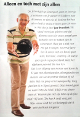

Reiservaringen
Maak ons deelgenoot van uw ervaringen met deze skireizen.
Uw reactie zal zeker opgenomen worden.

La Plagne maart 2014
Een week op stap met de krasse knarren, dat is weer eens wat anders! Het sportieve volkje staat voor negenen al bij de lift en stuift als jonge honden de bergen af. Als snowboarder rammel ik er dan maar achteraan, ons type komt nou eenmaal langzamer op gang.
Ik ben de spartaanse Franse wintersport-oorden gewend dus over het hotel absoluut geen klachten. Ontbijt en thee met cake was meteen al perfect en toen we de keuken uitlegden dat Hollandse hongerlappen echt grotere porties willen was het diner ook top.
Leuk dat de chauffeur het goed vond dat ik mijn gitaar als extra bagage mee mocht nemen, daar hebben we plezier van gehad, toch? Tot de volgende keer. Frank/Janine
Een ontzettend leuke ski reis met sportieve leeftijdgenoten. De busreis ging erg snel met de inname van een slaappil en een glaasje wijn. Jan bedankt. Kitty
Gevraagd werd naar de ervaringen van de voorbije skiweek. Le Plagne en omgeving is een schitterend skigebied met mooie makkelijke afdalingen. Een meevaller was dat voor de 72 plussers de skipas bijna gratis is.
Het hotel had een aardig balkon, maar zonder stoelen. De douche was vrij klein, het douchegordijn plakt aan je billen. De bedden en ook de maaltijden waren goed. De eetruimte echter veel te luidruchtig. De afternoon thee was weer een pluspunt, maar de harde muziek was weer minder aangenaam.
Het merendeel van de oudere skiërs wenst meer comfort. Hotel Rhododendron is meer geschikt voor jongere skiërs.
Maar bovenal de service van de Sunweb leider was zeer goed!
Al met al toch een zonnige mooie skiweek. T.E.
Wagrain januari 2014
Na een jaartje de wintersport overgeslagen te hebben om eens wat anders te gaan doen, dit jaar weer gekozen om met Jan mee te gaan skiën. Tot volle tevredenheid. Een oversized bus op de heenweg maakte het makkelijker om wat te slapen, de aankomst in Wagrain terwijl de sneeuw naar beneden dwarrelde beloofde ook goede sneeuwcondities om te skiën.
Op de aankomst dag waag ik me daar niet aan, maar een wandeling door dorp, bos en langs een kabbelend beekje heeft ook zijn charmes. Zeker met een apfelstrudel aan het einde.
Het hotel was uitstekend. Grote kamer met balkon, prima bedden en goede badkamer. Ook over het eten niets dan goeds. Uitgebreid ontbijtbuffet en avondbuffet met voor elk te veel van het goede!
Verder 7 dagen volop geskied met een gezellige groep die t/m de laatste dag samen optrok. Alleen heel jammer dat 2 leden van de groep moesten afhaken, één vanwege een enkelblessure en de ander met een gebroken schouder. Heel vervelend voor hen beiden.
Juist het skiën in een groep van ongeveer gelijk niveau maakt het skiën tot een groot plezier en zeker de diverse skihutten onderweg voor koffie of berg frieten maakt het tot een super leuke vakantie!
Dit was voor mij de 4de vakantie met Jan en zeker niet de laatste! I.v/d.R.

Het was voor mij de eerste keer dat ik mee ging en gelijk heel goed bevallen. Zal zeker dit volgend jaar willen herhalen. Accommodatie en skigebied was ook geweldig, kortom een goede week gehad met de skigroep en de rest van de groep 43+. F.A.
Skiën zonder sneeuw gaat niet, maar toch heb ik het liefst dat-ie 's nachts valt, en niet overdag. De zon is voor overdag! Na een paar dagen was dat in Wagrain gelukkig ook het geval! Leuke kennismaking met de groep, genoten van het heerlijke hotel, en als er volgend jaar weer een mooie locatie/hotel gekozen wordt, dan ga ik graag weer mee! E.W.
Canazei februari 2013
Alleen en toch met zijn allen
"Tja, je bent gek op wintersport! Jaren en jaren ga je achtereen met je partner en kinderen naar de sneeuw en dan zijn de kinderen het huis uit en heeft je vrouw er ineens geen zin meer in.
Wat doe je dan? Ik stond voor een dilemma toen mijn vrouw aangaf geen behoefte meer te hebben aan de wintersport. Maar ik laat mij niet voor één gat vangen.
De eerste jaren ben ik samen met een kennis gaan skiën. Heel leuk.
De laatste jaren ga ik in groepsverband skiën met Ski-Fun 43+. Dat is een skigroep van mensen van boven de 43 jaar met alleenstaanden, alleengaanden en met van wie de partner niet kan of wil skiën. Met zo'n groep is het supergezellig. Ik ben met die groep naar Tignes, Portes du Soleil (beide Frankrijk) en dit jaar naar Canazei (Italië) geweest. Ik kijk er nu alweer uit naar het volgend jaar.
Waarom ik met een helm op de foto op de foto sta?"
Lachend geeft hij aan: "Die heb ik sinds Tignes. Mijn vrouw vindt het wel belangrijk dat ik weer heelhuids terug kom". J.O.
Canazei februari 2012
Ik wil even reageren op de fijne vakantie naar Canazei.
Ik heb erg genoten zowel van de locatie (hotel Bernard) uitstekend en het skigebied en
de aardige mensen die ik ontmoet heb op deze vakantie. We (de nieuwe) werden meteen opgenomen
in een groep. Het is daarom zeker de moeite waard om dit nog een keer te doen.
Bedankt! T.v.d.H.
Het was ook deze keer in januari weer een geweldige leuke en gezellige wintersportweek in Canazei. De hele week zon op een dag na. Ook een heel mooi ski-gebied voor zowel gevorderden als voor matige skiërs. De keuze van het hotel en de maaltijden droeg ook bij aan een zeer geslaagde wintersportweek. En hopelijk wie weet tot volgend jaar maart. T.S.
Skigebied Val di Fassa en hotel Bernhard waren super. Na het skiën, genoeg mensen
om mee naar de plaatselijke horeca te gaan/te dansen of om s'avonds een kaartje te leggen. Een vakantie waar
je met plezier op terug kijkt!
Bedankt Jan, voor de goede keuze. D.H.
27-12-2010
Ik wens jullie en alle vrienden van het skiën in Tignes van begin dit
jaar ook alle goeds toe voor 2011.
Ik heb nog steeds fantastische herinneringen aan de vakantie
van dit jaar met een onwijs leuke groep. Ik ga dit keer in 2011 (nog) niet mee omdat ik een
wintersport-vakantie met mijn vriendin probeer, die overigens niet skiet. Wellicht dat ik in 2012
weer van de partij ben!
Met hartelijke groet, F.J.
Tignes januari 2010
Lieve J...... Hier een foto van een zeer tevreden groep, die het geweldig gehad heeft. ........D.H.
Vanuit dit medium wil ik graag nog kwijt dat ik een geweldige wintersportvakantie heb gehad,
mede ook door de contacten met jullie! Het is jaren geleden dat ik zo'n fantastische vakantie heb meegemaakt.
Ook met mijn 'slaapmaatje' Ron had ik het uitstekend getroffen. We hebben veel lol gehad.
Diny, bedankt voor de foto's en ik wens je een spoedig herstel ....................... F.J.
Lieve vriendinnen en beste vrienden (zo voel ik dat na een week met jullie te hebben mogen skien) Ook ik kan me geheel vinden in de woorden van Frank. Toch nogmaals een extra woordje van dank aan Gonny en Eric die het mogelijk maakten dat ik met verstand op nul en vaak in het spoor van en/of Eric mij naar beneden kon laten vallen over deze prachtige pistes. Jammer dat het feest voor Diny een naar staartje had. Overigens moet ik zeggen: Diny, dat ik je een buitengewoon stoere meid vind. Je bent toch met ons gaan eten en heb ons ook weer in de bus vergezeld. In wens je een vlot en volledig herstel toe. Voor de dames een lieve en voor de heren een hartelijke groet.A.K.
maart 2009
Ik heb genoten van deze week, er echt even helemaal uit geweest, voel me
kiplekker na al die zon en beweging en kan er weer helemaal tegenaan met mijn activiteiten.
Wat ik bijzonder heb gevonden, dat alle oude wintersportgangers ons als nieuwelingen zo in de groep
gesloten hebben. Het voelde alsof ik jullie al tijden kende.
Ik hoop een volgend keer weer mee te
mogen doen. J.v.W.
Wij kijken beiden terug op een fantastische skiweek in ontzettend gezellig
gezelschap.
Voor herhaling vatbaar.I.d.R. en F.v.d.W.
.......allemaal ineens zo vlug,.............en je niet heb kunnen bedanken
voor het organiseren van de ski reis. Ik heb weer genoten, en je had ook voor schitterend weer gezorgd. Super.
Ik kan me geen skivakantie herinneren waarbij we zulk mooi weer hadden. Het was allemaal geweldig! Een top
vakantie.
Wie weet tot volgend jaar.M.F.
Ik wil je langs deze weg normaals bedanken voor de goed georganiseerde ski-vakantie.Les Sybelles is een prachtig ski-gebied en wij troffen het met de sneeuw kwaliteit. Het hotel was goed en het weer kon niet beter. Zowel de heen- en terugreis met Sunweb waren comfortabel ................ en wie weet tot volgend jaar.D.v.D.
31 augustus 2008
Omdat het me zo goed bevallen is dit jaar (ondanks die gebroken rib), wil ik me samen met M. weer inschrijven voor de wintersport, ditmaal in Les Menuires in januari.A.V.
5 september 2008
Graag zouden we het wintersportprogramma weer toegestuurd krijgen want het lijkt ons leuk om weer eens te gaan skiën. We hebben eerder erg genoten van de reis dus we willen ons er weer in verdiepen wat er nu op je programma staat..P.B. en E.V.